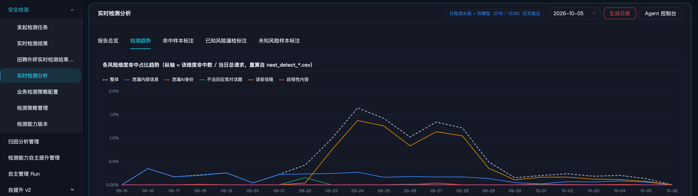
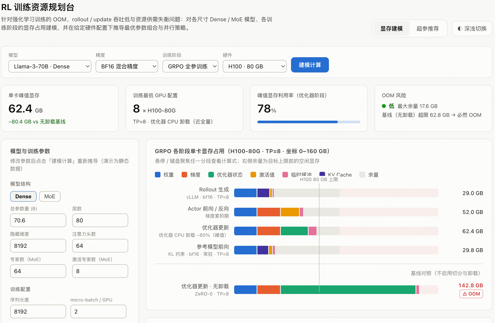
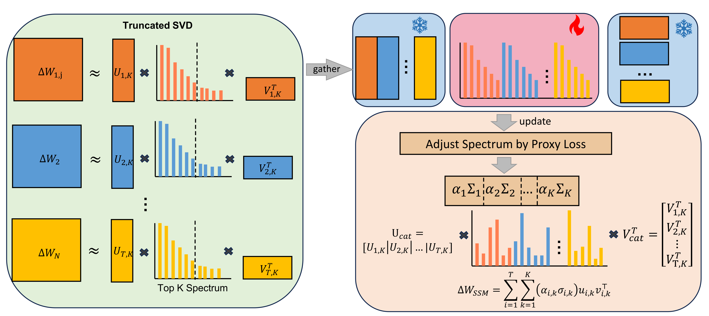
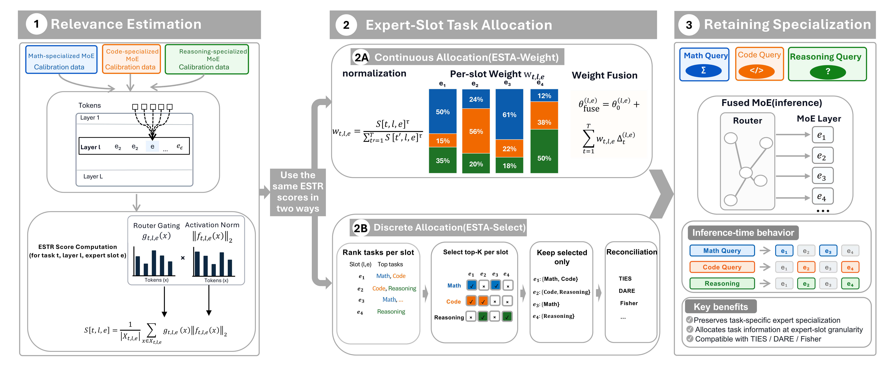

夏洋
华中科技大学 2027 届计算机硕士（计算机科学与技术学院 · 计算机技术）· 男
M202474219@hust.edu.cn
18972968237
硕士：华中科技大学（985）2024.09–2027.06
本科：武汉理工大学（211）软件工程 2020.09–2024.06
面向多任务、高并发、资源受限场景，围绕 模型能力整合 · 分层建模 · 业务闭环 · 训推优化
四项能力，在 2 段实习、7 个项目 中交叉验证、闭环沉淀
00教育经历与荣誉
华中科技大学（985，双一流）硕士 · 武汉理工大学（211，双一流）本科 · 专业第三、推荐免试攻读硕士
华中科技大学 2024.09 – 2027.06
计算机科学与技术学院 · 计算机技术（硕士）
研究方向：多任务模型融合 · 持续学习 · 大模型后训练
武汉理工大学 2020.09 – 2024.06
计算机与人工智能学院 · 软件工程（本科）
专业第三 · 推荐免试攻读硕士
全国大学生数学竞赛 一等奖
RAICOM 大学生程序设计竞赛 国家二等奖
湖北省大学生数学竞赛 一等奖
校一等奖学金
校三好学生
校优秀毕业生
校优秀共青团员
校优秀共青团干部
英语四级 597
英语六级 560
01技能 — 经历 关联图谱
悬停 任意卡片高亮关联链路 · 点击 技能卡跳转实习详情
模型能力整合
多任务学习 · 多任务模型融合 · 在线蒸馏和离线蒸馏 · 持续学习，缓解任务冲突与遗忘
5 项
分层建模
LLM、BERT、Laya 等模型训练经验，结合级联、任务路由、思维链按需加载，实现难易样本分流
3 项
业务闭环
用户模拟、数据构造、奖励设计、评测归因及 Guardrail 建设，推动模型能力持续演进
3 项
训推优化
显存、并行策略、资源配比及关键超参优化训推流水线，提升训练吞吐、推理效率与资源利用率
2 项
美团 · 履约平台技术部（2026.02–2026.10）
履约垂域模型后训练 F1 91% · GPU −73% · 万诉率 −0.8‰
Qwen3-30B-A3B：SFT→RL→MOPD 多阶段后训练 · 专家粒度 PCGrad · HPD→GKD 蒸馏至 8B · 按需推理
安全护栏 / badcase 自动识别 F1 ≥ 85% · 建设周期 → 天级
15+ 类标签体系 · Regex + BERT/Laya/Kev 级联 · 标签自迭代框架 · SQLite+Web 检测平台
骑手招聘 Agent（企微多轮） 约面率 +12pp · bad case −0.8pp
用户模拟器分层画像 · SFT→Agentic RL · 非对称在线自蒸馏 · 状态转移 + 语义质量奖励
金山集团 · AI 产品中心（2025.11–2026.02）
RL 训练资源规划与调参 吞吐 +82% · 显存承载 +21%
Dense/MoE 显存建模 · FSDP/Megatron 并行策略推导 · 同步/异步资源池最优配比
科研 · 华中科技大学
谱选择多任务模型融合 AAAI 2027 在审 · 独立一作
截断 SVD 解耦权重更新，冻结方向、精调奇异值 · 多任务融合 SOTA，逼近联合训练上界
ESTA-Fusion：SMoE 专家粒度融合 ARR 在审 · 独立一作
无梯度稀疏 MoE 融合框架 · 路由门控加权专家输出幅值度量重要性 · 理论 + 实验双验证
ODC-LoRA 大模型持续学习 湖北省"尖刀计划"
LoRA 更新解耦方向与幅度 · 正交约束 + 幅度增量约束 · 类增量场景显著减轻遗忘
模型能力整合
分层建模
业务闭环
训推优化
连线 / 圆点颜色 = 项目调用的技能
Qwen3-30B-A3B (MoE)SFT → RL → MOPDHPD / GKD 蒸馏专家粒度 PCGrad
任务感知路由思维链按需加载Agentic RL用户模拟器
非对称在线自蒸馏Regex + BERT / Laya / Kev 级联Guardrail
FSDP / Megatron显存建模截断 SVDSMoE 融合LoRA 持续学习
02实习经历
美团（后训练算法实习生 · 履约平台技术部 · AIGC 与数字化组）与金山集团（训推算法实习生 · AI 产品中心训推技术部）
履约垂域模型后训练 —— 审核场景多任务学习
模型能力整合分层建模业务闭环训推优化
背景：履约场景订单审核任务种类多（顾客位置无法进入、骑手虚假送达、骑手诱导用户取消等）、QPS 高，
基础模型精确率 / 召回率低，线上推理资源开销大、GPU 利用率低。
多阶段
基于 Qwen3-30B-A3B 搭建 SFT→RL→MOPD 多阶段后训练流程，针对不同难度样本实现按需推理（思维链按需加载）
多任务
引入专家粒度 PCGrad、任务感知路由、动态调整学习率、在线动态采样，降低任务间干扰
小型化
构建 HPD→GKD 两阶段蒸馏将模型小型化至 8B
上线
结合不同地区数据分布进行阈值调优，模型已全量上线
各任务 precision 均 > 90% · F1 平均 91% · 部署 GPU 资源降低 73% · 万诉率下降 0.8‰
30B 主模型迭代路径与 8B 小型化路径（F1）—— 30B 蒸馏为 8B 教师
安全护栏 / 自动化 badcase 识别
分层建模业务闭环
背景：面向骑手助手、招聘外呼、企微招聘等 AIGC 场景，设计并落地基础安全与业务安全 15+ 类标签检测体系。
级联
采用 Regex + BERT / Laya / Kev 级联策略：规则层兜底高频模式，小模型处理清晰样本，重模型只啃长尾难题
自迭代
设计标签细分场景拆解与数据构造方案，训练集与评测集持续迭代，沉淀"冷启动 + 迭代循环"两阶段 Skill
多任务
在 Laya 和 Kev 上实现多任务和多标签学习
平台
搭建 SQLite + Web 检测平台支撑结果分析与迭代闭环
各标签 F1 ≥ 85% · 标签检测能力建设周期压缩至 天级
标签检测体系：基础安全与业务安全 15+ 类标签 · Regex + BERT/Laya/Kev 级联 · 标签自迭代框架

骑手招聘 Agent（企微多轮）
模型能力整合分层建模业务闭环
背景：面向骑手招聘线索转化，搭建企微多轮招聘 Agent，实现候选人信息收集、岗位沟通及约面流程推进。
数据制备
设计用户模拟器和分层多维特征，构造用户"功能 × 场景 × 角色"的外显画像和潜在顾虑
模型训练
构建 SFT→Agentic RL 两阶段训练流程；基于潜在顾虑设计非对称在线自蒸馏，引导模型主动探查用户顾虑；融合用户状态转移奖励与语义质量奖励，联合优化状态推进与拟人性 / 说服力
评测归因
构建自动检测 Benchmark，结合线上抽检开展 bad case 聚类归因，驱动数据、Skills 和 Guardrail 迭代
bad case 下降 0.8pp · 约面率提升 12pp
用户模拟器 × Agentic RL 算法架构：RM-GRPO 控"怎么说" · 自蒸馏定"往哪探索" · 状态转移判"有没有推动用户"
强化学习流水线优化（训推资源规划与调参）
训推优化
问题：强化学习训练存在 OOM、rollout 与 update 吞吐低、资源供需失衡等问题，人工调参难以灵活适配不同配置。
显存建模
对 Dense / MoE 各尺寸模型、各阶段的显存占用进行建模，给出训练与推理的最低显存配置
并行策略
针对同步和异步资源池、FSDP 和 Megatron 框架，推导给定硬件配置下最优参数组合与并行策略
方法论
形成可复用的资源规划与调参方法，替代人工经验调优
实现 OOM 问题规避 · 单卡有效显存承载能力提升 21% · 端到端 RL 训练吞吐提升 82%
Dense / MoE 显存建模与资源规划：给定硬件配置下的最优参数组合与并行策略

03科研经历 —— 细粒度模型融合
问题：预训练模型通常针对不同任务分别微调，多模型并行部署带来显存、存储、维护与推理成本；联合多任务训练又需要重新集中训练数据并进行昂贵训练。
模型融合的优势：低训练成本 + 低部署成本 + 能力可组合。
研究思路
发现异质性→
构造诊断信号→
细粒度融合→
理论与实验验证
|
Spectral-Selective Merging |
Expert-Slot Task Allocation（ESTA-Fusion） |
| 研究对象 |
Dense / LoRA 权重矩阵 |
Sparse MoE |
| 细粒度单元 |
SVD Rank Component（秩一矩阵） |
Expert Slot |
| 核心问题 |
哪些秩一矩阵方向是冲突方向 |
任务知识应分配到哪个专家 |
| 诊断信号 |
Magnitude × Alignment（WSAR 冲突度量） |
Gate × Expert Output Norm（ESTR 关联度） |
| 投递情况 |
AAAI 2027 在审（Phase 1 通过）· 独立一作 |
ARR 在审 · 独立一作 |
谱选择模型融合（Spectral-Selective Merging）
AAAI 2027 在审独立一作
诊断
实验发现性能下降与"大幅度权重更新集中于冲突方向"密切相关；发现模型融合失败主要来自高能量但方向不一致的谱成分，提出 WSAR 衡量冲突程度
方法
利用截断 SVD 将权重更新解耦为奇异向量与奇异值，冻结方向、精细调节奇异值——保留有用方向、抑制冲突方向；建立理论解释并提出 SSM 方法
结果
在图像和文本分类的多任务模型融合场景实现 SOTA（CLIP、Flan-T5 等 benchmark），准确率逼近联合多任务训练的经验上界
论文《Diagnosing and Mitigating Spectral Conflict in Model Merging via Spectral-Selective Merging》· AAAI 2027 在审（Phase 1 通过，独立一作）
SSM 框架：截断 SVD 解耦权重更新 → 谱成分按 WSAR 诊断 → Proxy Loss 调节奇异值、冻结方向

SMoE 专家粒度融合（ESTA-Fusion）
ARR 在审独立一作
诊断
现有多任务模型融合方法忽视 SMoE 同层内不同专家的任务偏好差异；发现 layer-level 粒度太粗，会丢失 expert specialization
方法
提出新的 expert-slot task allocation 视角与 ESTR relevance score，以路由门控加权的专家输出幅值衡量 task-expert 关联；无梯度稀疏 MoE 融合框架，在专家粒度分配融合权重
结果
理论证明 + 大规模实验验证细粒度 allocation 有效性，更好保留各任务专家输出的分布特征
论文《ESTA-Fusion: Expert-Slot Task Allocation for Sparse MoE Model Merging》· 投递至 ARR（独立一作）
ESTA 框架：任务×专家 ESTR 关联度估计（路由门控 × 专家输出幅值）→ Expert-Slot 连续分配

ODC-LoRA：大模型持续学习
湖北省政府"尖刀计划"2024.12–2025.10
问题
参数扩展式持续微调为各任务独立训练 LoRA，推理阶段难以选择性激活；直接融合多 LoRA 又因参数冲突导致性能退化
方法
将 LoRA 更新解耦为方向与幅度，对方向施加正交约束、对幅度增量施加变化约束，平衡稳定性与可塑性
结果
在图像和文本分类的类增量场景下显著减轻遗忘
论文《ODC-LoRA: An Efficient and Extended Continuous Learning Method Based on Orthogonal Decoupling and Combination》